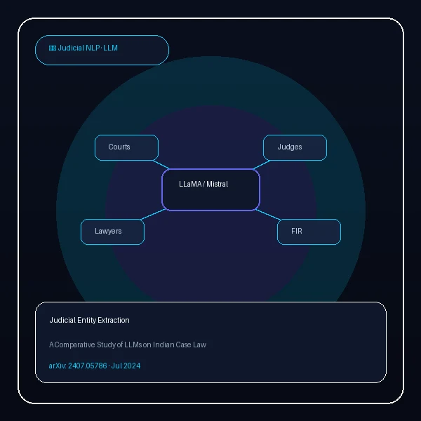
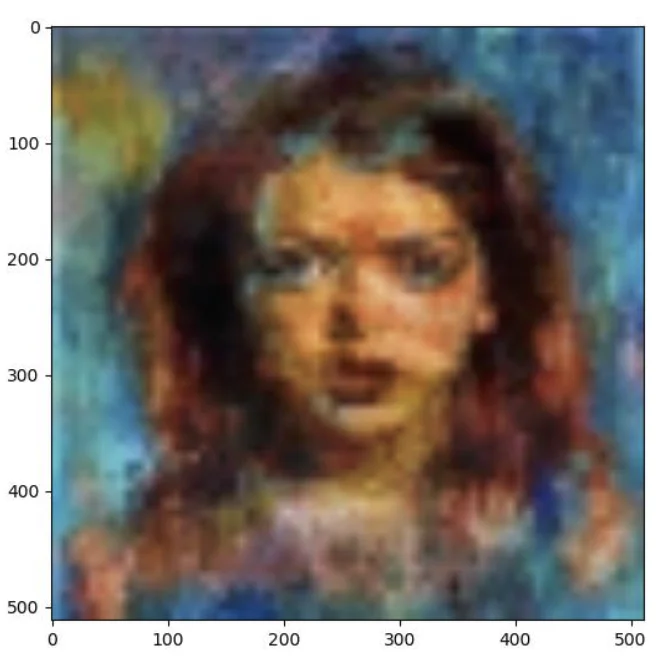
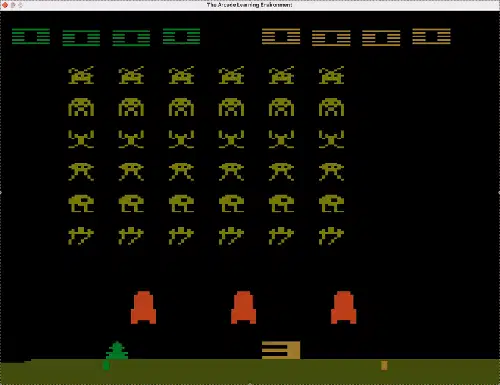
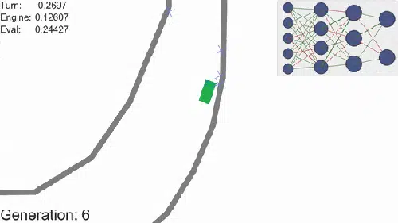
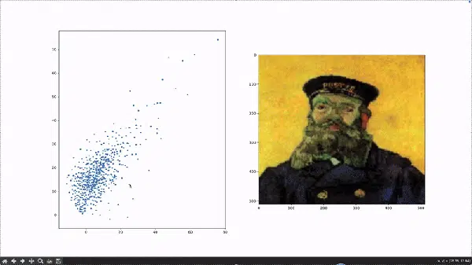
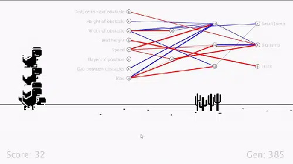
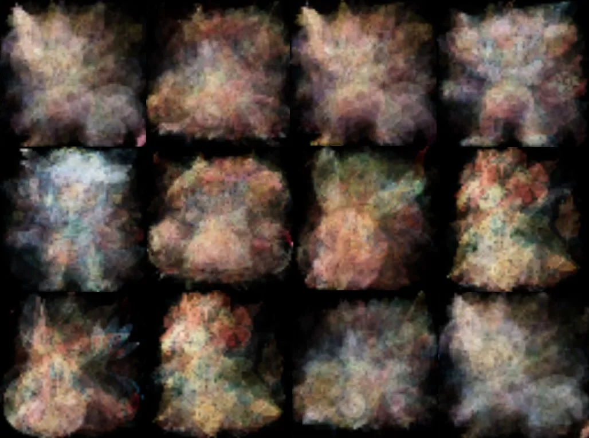
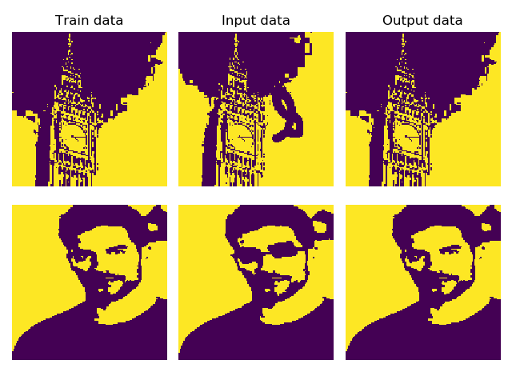

Atin Sakkeer Hussain
Focusing on
About Me
Pioneering multi-modal intelligence, generative systems, and automated reasoning at the intersection of theory and real-world scale.
AI Researcher & Applied Systems Engineer
Specializing in Multimodal Large Language Models, advanced AI evaluation harnesses, multi-agent reasoning, and enterprise-grade systems. Proven experience translating foundational research into robust production systems - ranging from developing simulated user and evaluation harnesses for Google Gemini at Turing to architecting persistent memory architectures with dynamic tool execution.
Backed by strong mathematical foundations and first-principles deep learning, I have published novel architectures and benchmark datasets (such as MU-LLaMA, M2UGen, and ARTEMIS-DA) across premier venues including IEEE/ACM ICASSP and leading AI archives.
Technical Expertise
A comprehensive toolkit developed through years of cutting-edge AI research and end-to-end systems engineering.
Multi-Modal AI & Generative LLMs
Architecture design, fine-tuning & evaluation
Data Analytics & LLM Reasoning
Automated insight synthesis & code generation
Reinforcement Learning & Genetic AI
Agent simulation & neuroevolution systems
Languages, Systems & Frameworks
Core programming, full-stack & tooling
Experience & Education
A proven track record spanning LLM evaluation for frontier models, enterprise AI deployment, and foundational academic research.
Professional Experience
AI Engineer & Python Developer
Jun 2024 - Aug 2026Turing · Collaborating with Google Gemini Team
- Developed a User Simulation framework to train and evaluate Gemini flagship models with realistic multi-turn interaction scenarios using simulated users and dummy APIs.
- Designed scalable AI frameworks for training data creation and automated quality control for Gemini model training.
- Built evaluation harnesses inspired by Tau Bench and Galileo AI to assess system performance under realistic dialogue conditions.
- Constructed continuous improvement evaluation loops for Google Gemini-powered products using error classification and reinforcement learning.
AI Integration Specialist
Jun 2024 - Aug 2026Saniservice · Dubai, UAE
- Integrated automated computer vision pipelines (image classification, analysis, and automated report generation) into daily operations, transforming raw visual data into structured reports.
- Built an AI-human collaborative sales interface with a custom memory framework enabling agents to learn individual salesperson communication styles while retaining client context.
- Architected and deployed a unified natural language interface connected to the ERP system, WhatsApp, and email servers for real-time operational querying.
Undergraduate AI Researcher
Jun 2023 - May 2024National University of Singapore (NUS)
- Researched multimodal NLP and audio-language modeling for music question answering and generation.
- Developed and published MU-LLaMA (accepted at IEEE/ACM ICASSP 2024) and M2UGen, introducing the MusicQA dataset.
Undergraduate Researcher (Recommender Systems)
Jan 2022 - Dec 2023Ubisoft · Singapore
- Investigated Transformer architectures for in-game personalized recommendation systems.
- Proposed and implemented a session-based recommendation framework combining user preference clustering with sequential modeling on real-world Ubisoft datasets.
AI Integration Specialist
Jun 2022 - Aug 2022DLI-IT Group HR Works · Dubai, UAE
- Designed and deployed an intelligent HR chatbot automating internal employee service requests.
- Built an AI-powered resume parsing and matching system evaluating candidates against job descriptions.
Computer Vision Engineer
Jun 2021 - Aug 2021Project Cyclops with FarmBot · Dubai, UAE
- Engineered a lightweight real-time CV weed detection model and automated laser-targeting attachment for sustainable precision agriculture.
AI Trainer & Educator
May 2021 - Jul 2022Sustainable Living Labs · Singapore
- Delivered AI education through Intel AI for Youth Program and mentored student teams on real-world projects.
- Led Meta AI Bootcamp at Temasek Polytechnic teaching applied machine learning from formulation to deployment.
Education
Master of Science in Computer Science
Aug 2026 - PresentTexas A&M University
Focusing on Artificial Intelligence, Intelligent Systems, Machine Learning and Natural Language Processing.
AI & NLP FocusBachelor of Science in Data Science
Jan 2025 - Jul 2026Arizona State University
Data Science Major specializing in the Computer Science Track.
Dean's List · GPA: 3.87Bachelor of Computer Science
Aug 2020 - May 2024National University of Singapore
Computer Science and Mathematics Major.
NUS Turing Program Scholar in AIPublished Research
Peer-reviewed and preprint publications spanning Multimodal LLMs, Audio & Music Generation, and Automated Analytical Reasoning.
ARTEMIS-DA
Advanced Reasoning and Transformation Engine for Multi-Step Insight Synthesis in Data Analytics
{kind=link}
Authors: Atin Sakkeer
This paper introduces ARTEMIS-DA, a novel framework for complex multi-step data analytics that orchestrates three specialized components - a Planner for task decomposition, a Coder for dynamic code generation and execution, and a Grapher for interpreting visualizations. Its key novelty is the integration of structured reasoning, automated data transformation, and visual insight synthesis within a unified LLM-driven analytical workflow, achieving state-of-the-art results on WikiTableQuestions and TabFact.
M2UGen / MuMu-LLaMA
Multi-modal Music Understanding and Generation with the Power of Large Language Models
{kind=link}
Authors: Atin Sakkeer Hussain, Shansong Liu, Chenshuo Sun, Ying Shan
Introduces MuMuLLaMA, a multimodal music understanding and generation framework along with a 167.69-hour annotated dataset spanning text, images, videos, and music. Connects LLM-based multimodal reasoning with pretrained generative models (AudioLDM 2 & MusicGen) to jointly support music QA, text-to-music, and video/image-to-music generation.

Judicial Entity Extraction
Large Language Models for Judicial Entity Extraction: A Comparative Study
{kind=link}
Authors: Atin Sakkeer Hussain, Anu Thomas
Investigates the use of LLMs for domain-specific named entity recognition in Indian case law, focusing on judicial entities such as courts, judges, lawyers, petitioners, and FIR numbers. Presents a comparative evaluation of LLaMA 3, Mistral, and Gemma for extracting structured judicial facts.
MU-LLaMA · ICASSP 2024
Music Understanding LLaMA: Advancing Text-to-Music Generation with QA & Captioning
{kind=link}
Authors: Shansong Liu, Atin Sakkeer Hussain, Chenshuo Sun, Ying Shan
Conference: Accepted for IEEE ICASSP 2024 (Seoul, South Korea).
Proposes the Music Understanding LLaMA (MU-LLaMA) to answer music questions and generate captions using MERT representations, introducing the MusicQA Dataset for open-ended music intelligence.

GAN-VAE Framework
Combining Variational Autoencoders & GANs to Improve Image Generation Quality
{kind=link}
Authors: Atin Sakkeer Hussain
Introduces a novel GAN-VAE framework for improving low-quality images generated by GANs, particularly under model collapse and limited-data settings, demonstrating improved performance over standard WGANs on sparse datasets.
Featured Projects
Selected open-source AI models, simulations, and intelligent agents built with deep learning & genetic algorithms.
- All
- Vision
- Reinforcement Learning
- Genetic Algorithm
{kind=link}
Deep Dream
Enhance Patterns in Images via Algorithmic Pareidolia
{kind=link}
A program for user's to experience Deep Dream which uses a convolutional neural network to find and enhance patterns in images via algorithmic pareidolia, thus creating a dream-like hallucinogenic appearance in the deliberately over-processed images.

Atari AI
Use Reinforcement Learning to Play the Atari Gym
{kind=link}
Actor-Critic model developed to play and learn games in the Atari Gym. It is a method that uses two neural networks to optimize performance. The Actor Network is the AI agent that plays the game while the Critic Network classifies the game as a good or a bad one. Together the model optimize for the best strategy for the game.
{kind=link}

Smart Cars
Genetic Algorithm to Train Cars on a Race Course
{kind=link}
A 2D Unity simulation where cars learn to navigate courses using a FeedForward Neural Network trained via a modified genetic algorithm. Initially, N randomly initialized cars are spawned. The best performers are selected for recombination, producing new "offspring" cars with slight mutations to maintain diversity. This new population navigates the course, and the cycle of evaluation, selection, recombination, and mutation repeats.

Latent Space Visualization
Visualize the Latent Space of an AutoEncoder model
{kind=link}
An application to visualize the Latent Space of an AutoEncoder which contains a compressed representation of the image, which is the only information the decoder is allowed to use to try to reconstruct the input as fully as possible. To perform well, the network has to learn to extract the most relevant features in the bottleneck. Images can be generated by sampling from any point in the Latent Space that is plotted on a 2D space.
{kind=link}
{kind=link}

Dino Game
Genetic Algorithm to Train an AI for the Dino Game
{kind=link}
A Genetic Algorithm to train an AI using NeuroEvolution of Augmenting Topologies (NEAT) written in Lua to evolve the Neural Network and decide the weightage on the different factors such as Distance to next obstacle, Gap between obstacles and Height of obstacles.

Variational AutoEncoder
Generate Images from a Latent Space
{kind=link}
Variational Autoencoders (VAEs) are powerful generative models, now having applications as diverse as from generating fake human faces, to producing purely synthetic music. This application trains a VAE on an input dataset and then generates uniformly sampled images from the VAE's Latent Space.

Image Reconstruction
Image Reconstruction using a Hopfield Network
{kind=link}
At its core a Hopfield Network is a model that can reconstruct data after being fed with corrupt versions of the same data. This neural network proposed by Hopfield in 1982 can be seen as a network with associative memory. When the network is presented with an input, i.e. put in a state, the networks nodes will start to update and converge to a state which is a previously stored pattern. The learning algorithm "stores" a given pattern in the network by adjusting the weights.